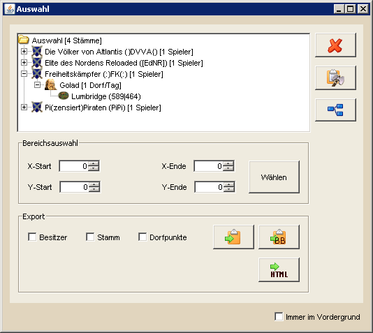

Auswahlübersicht |
|
|  | |
| In der Auswahlübersicht werden gewählte Dörfer, Spieler und Stämme gezeigt, die über das Auswahlwerkzeug gewählt wurden. Gewählte Elemente können direkt aus dem Baum per Drag&Drop zum Beispiel in den Angriffsplaner in die Herkunft- oder Zieltabelle gezogen werden. Der erste Buttons auf der rechten Seite dient dazu, die markierten Elemente zu entfernen. Damit können einzelne Dörfer, Spieler, Stämme oder alle Einträge entfernt werden, je nachdem welche Knoten gewählt werden. Ist der Auswahl-Knoten markiert werden alle Elemente der aktuellen Auswahl entfernt. Über den zweiten Button ist es möglich, zwischen einer Baumdarstellung, wie sie im Screenshot zu sehen ist, und einer flachen Darstellung, die nur die ausgewählten Dörfer zeigt, zu wechseln. Der letzte Button auf der rechten Seite dient dazu, Dörfer in der Zwischenablage zu suchen und sie der Auswahl hinzuzufügen. So könnt ihr beispielsweise Dörfer im Spiel markieren, kopieren und sie einfach nach DS Workbench übertragen. Zusätzlich besteht die Möglichkeit, Dörfer unter einer bestimmten Punktzahl aus der Auswahl zu entfernen und einen Bereich manuell anzugeben, aus dem alle Dörfer gewählt werden. Dafür ist die entsprechende Start- und End-Position in die dafür vorgesehenen Felder einzutragen und mit 'Wählen' zu bestätigen. Der untere Bereich dient dem Export der markierten Elemente. Zum einen können diese als BB-Codes bzw. unformatiert in die Zwischenablage exportiert werden. Hier kann man selbst entscheiden, welche Informationen in den exportierten Daten angezeigt werden. Dafür stehen die folgenden Variablen zur Verfügung: |
|
| %TRIBE% | Besitzer des Dorfes |
| %ALLY% | Stamm des Besitzers |
| %VILLAGE% | Ausführlicher Dorfname (Name, Koordinaten, Kontinent) |
| %X% | X-Koordinate des Dorfes |
| %Y% | Y-Koordinate des Dorfes |
| %POINTS% | Punkte des Dorfes |
| Eine weitere Möglichkeit ist der Export als HTML. Hier werden alle Informationen, inklusive Stämmen und Spielern, in einer HTML-Datei als Baumstruktur dargestellt. Zusätzlich sind in dieser HTML Datei Links zu Spielerakten und dem Gastzugang für Stämme, Spieler und Dörfer enthalten. | |